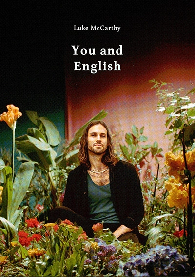

Без зубрежки. Без перевода в голове.
Моё самое личное, практичное, психологически выверенное руководство по быстрому и приятному освоению английского — без стресса, без скуки и без вечных «я снова застрял».
Выучить его быстро, легко и в кайф
Самый быстрый путь к уверенной, свободной речи — с носительским звучанием. Эта система ведет вас к максимальному результату без стресса и усталости.
Вы будете учиться через мои настоящие, дерзкие и порой безумные истории жизни американца — и впитывать живой язык таким, как он звучит в реальности.
Независимо от уровня — эта книга меняет то, как вы думаете, слышите и чувствуете язык.